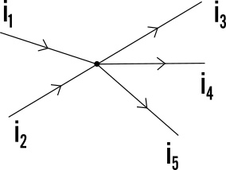
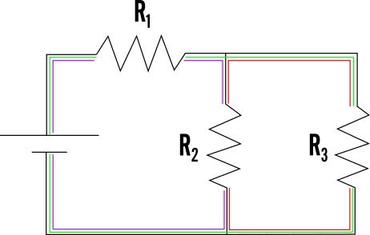
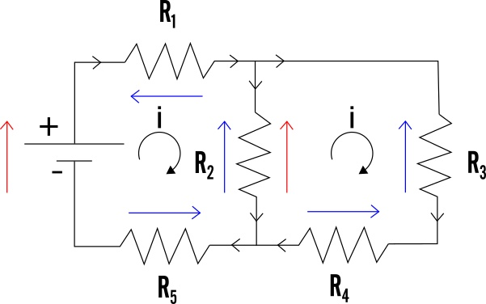

Fonti:
- https://www.youtube.com/@StepbyStepFisica
- https://www.youmath.it/lezioni/fisica/elettricita/4920-leggi-di-kirchhoff.html
Introduzione
⚡ Potenziale e superfici equipotenziali
- Il potenziale è come l’altezza o profondità creata dalle cariche elettriche.
- Se una carica si muove restando sempre alla stessa altezza, non cambia potenziale.
- Questo percorso si chiama superficie equipotenziale.
- Metafora: correre sul bordo di una piscina senza salire o scendere.
- Anche se sembra una linea, in realtà in 3D è una superficie.
- Esempio: una carica che gira intorno a un’altra carica a distanza costante.
✨ A cosa servono le superfici equipotenziali?
- Aiutano a fare disegni più semplici.
- Viste dall’alto si capiscono subito i dislivelli.
- Sono sempre perpendicolari al campo elettrico:
- Campo e superfici formano angoli di 90° ovunque.
- Finché le cariche si muovono su una superficie equipotenziale:
- Il campo elettrico non compie lavoro.
- L’energia per muoversi viene solo da chi si sposta.
🧊 Conduttori e isolanti
- Nei conduttori, le cariche:
- Restano solo sulla superficie.
- Si distribuiscono per avere tutto allo stesso potenziale.
- Metafora: una festa in piscina dove tutti si vergognano e rimangono sul bordo.
- Se si collegano due conduttori:
- Le cariche si spostano subito finché i potenziali diventano uguali.
- Negli isolanti, invece:
- Le cariche possono stare anche all’interno.
- Metafora: tutti fanno acqua zumba dentro la piscina.
- Ogni conduttore ha una capacità, cioè quanta carica può accumulare:
- C = capacità.
- Q = carica.
- V = potenziale.
- L’unità di misura: Farad.
🛠️ Esempio con la statua e il bastone
- Statua di bronzo: capacità = 80.000 F.
- Bastone del nonno: capacità = 20.000 F, caricato con 5.000 C.
- Potenziale del bastone:
- Quando bastone e statua si toccano:
- Diventano un unico conduttore.
- Le cariche si ridistribuiscono.
- La statua avrà 4 volte la carica del bastone (perché ha 4 volte la capacità).
- Cariche finali:
- Bastone: 1.000 C.
- Statua: 4.000 C.
- Potenziale finale:
- Se il potenziale misurato è diverso, significa che la capacità reale era un’altra.
🪓 Le punte dei conduttori
- Nelle punte, la carica si concentra di più.
- Metafora: sembra che ci sia più gente ammassata anche se la lunghezza è uguale.
- Qui il campo elettrico è più intenso.
🏛️ I condensatori
- Due conduttori si chiamano armature.
- Insieme formano un condensatore.
- Esempio: due piastre parallele.
- Metafora: due piscine vicine dove ognuno fa la sua festa.
- Un condensatore:
- Accumula cariche opposte (+Q e –Q) sulle armature.
- La capacità si calcola:
- ΔV = differenza di potenziale tra le due piastre.
- Il campo elettrico tra le piastre: con σ = densità di carica.
🧮 Capacità di un condensatore piano
- Formula:
- A = area delle piastre.
- d = distanza tra le piastre.
- ε₀ = costante dielettrica del vuoto.
- εᵣ = costante dielettrica del materiale tra le piastre.
- Metafora:
- Piastre più grandi = più gente alla festa.
- Piastre più vicine = festa più intensa.
- Mettere un materiale tra le piastre è come alzare una siepe: aumenta la capacità.
💡 Energia nei condensatori
- Quando accumulano cariche, immagazzinano energia potenziale elettrica:
- Densità di energia (indipendente dalle dimensioni):
- Si usa per confrontare condensatori grandi e piccoli.
Corrente
⚡ Corrente elettrica
- Se le cariche si muovono, parliamo di corrente.
- Ogni carica in movimento è una corrente (anche un singolo elettrone in un atomo).
- Qui consideriamo cariche che si muovono nei fili.
💧 Metafora dell’acqua nel lavandino
- Non basta che le cariche si muovano a caso.
- Serve uno spostamento complessivo in una direzione.
- Come l’acqua in un lavandino:
- Se l’acqua crea vortici ma non scende nel tubo → non scorre.
- Se levi il tappo, l’acqua si muove in una direzione → corrente.
- I fili sono i tubi, le cariche sono l’acqua.
🔢 Corrente nei circuiti
- Corrente = portata di un fiume: quanta carica passa in un punto al secondo.
- Formula:
- Unità di misura: Ampere (A).
↔️ Convenzione del verso
- All’inizio si pensava che a muoversi fossero cariche positive.
- Poi si è scoperto che sono gli elettroni negativi.
- Di conseguenza:
- La corrente teorica scorre in un verso.
- Gli elettroni si muovono nel verso opposto.
- Ancora oggi si fa finta che si muovano cariche positive.
🪵 Il filo non è vuoto
- Il filo è come un torrente di montagna pieno di ostacoli (ioni positivi).
- Le cariche non riescono ad andare dritte:
- Continuano a schiantarsi qua e là.
- Si muovono avanti lentamente.
- Metafora dei tizi bendati che corrono in un bosco:
- Si agitano ovunque e sbattono contro tutto.
- Se guardi quanto procedono avanti, è pochissimo.
- Velocità di deriva:
- Spostamento medio in avanti.
- Molto più lenta della velocità di agitazione. (circa un centimetro al secondo)
- Formula:
dove:
- C (carica dell’elettrone)
- = sezione trasversale del filo
- = densità di elettroni
💡 Perché la lampadina si accende subito
- Non bisogna immaginare elettroni fermi all’interruttore in attesa di partire.
- Tutto il filo è già pieno di elettroni.
- Premendo il pulsante si manda un segnale (“correre!”) che si propaga molto veloce.
- La lampadina si accende grazie agli elettroni già vicini.
🔋 Generatore e differenza di potenziale
- Come una pompa dell’acqua che spinge il flusso.
- Nei circuiti la “pompa” è il generatore o la batteria.
- Simbolo: sbarra lunga (+), sbarra corta (–).
- La corrente convenzionale va dal più al meno.
- La batteria crea una differenza di potenziale (= altezza per l’acqua).
- Se non ci fosse differenza di potenziale:
- Come avere un tubo piatto → l’acqua non scorre.
- Gli elettroni sarebbero fermi.
- La differenza di potenziale si chiama forza elettromotrice (f.e.m.).
- Si misura in Volt.
- Non è una forza, nonostante il nome.
- Tra generatori in conflitto:
- Vince quello con la f.e.m. maggiore.
⚡ Tipi di generatori
- Generatori di tensione:
- Mantengono costante la differenza di potenziale.
- La corrente si adegua.
- Generatori di corrente:
- Mantengono costante la corrente.
- Regolano la tensione.
🔀 Corrente continua e alternata
- Modalità continua:
- f.e.m. o corrente costante.
- Modalità alternata:
- f.e.m. e corrente fluttuano.
- Come un tubo dell’acqua in cui si generano onde.
- Esempio:
- La presa di corrente di casa → corrente alternata.
Resistenze e leggi di Ohm
🌊 Circuiti elettrici e resistenze
Nella puntata precedente si era detto che i circuiti sono come tubi dell’acqua, dove il flusso si chiama corrente, e l’acqua corrisponde alle cariche elettriche. Tra gli elementi principali dei circuiti c’è il generatore, che è come una pompa: crea una differenza di potenziale e fa muovere le cariche “verso l’alto”. Ma se le cariche salgono, poi devono anche “scendere”.
⚙️ Il resistore: la cascatella con il mulino
Ci sono componenti che fanno “scendere” le cariche creando una differenza di potenziale negativa. Il più importante è il resistore, che si disegna con il simbolo a zig-zag. Un resistore si può immaginare come un mulino o una turbina nel condotto:
- L’acqua (le cariche) cade e incontra resistenza, facendo girare il mulino.
- Dopo aver ceduto energia, il liquido continua a scorrere. Allo stesso modo, il resistore è una “cascatella” che alimenta qualcosa: una lampadina, un microfono, un robot assassino, qualsiasi dispositivo elettrico.
📏 Resistenza
La resistenza misura quanto il resistore ostacola la corrente. Si indica con la lettera R e si misura in Ohm (Ω), in onore di Ohm che formulò le due leggi fondamentali. La prima legge di Ohm dice:
oppure, se preferite:
Interpretazione con la metafora:
- Più alto è il salto dell’acqua (ΔV), più veloce scorre (I).
- Più “pesante” è il mulino (R), più lenta è la corrente. Esempio: Un resistore con tensione di 10 V e resistenza di 20 Ω:
🧱 Cosa determina la resistenza di un resistore?
La resistenza dipende:
- Dal materiale (come se il mulino fosse di pietra o di legno).
- Dalle dimensioni. La formula generale è:
Dove:
- ρ (rho) = resistività (caratteristica del materiale, trovabile nelle tabelle).
- Più alta la resistività, più difficile il passaggio della corrente.
- La resistività aumenta con la temperatura (es. smartphone al sole: resistenza cresce e il telefono smette di funzionare bene).
- L = lunghezza del resistore.
- Più lungo il “torrente con rapide”, più fatica fanno le cariche.
- A = area della sezione del filo.
- Un fiume largo = più facile evitare gli scogli.
- Se il fiume è stretto, è più facile che le cariche si scontrino.
- Per i fili circolari:
🛠️ Semplificazione dei circuiti
I circuiti possono essere semplificati sostituendo gruppi di resistori con uno equivalente. Ci sono due casi principali:
1️⃣ Resistori in serie
- Sono collegati uno dopo l’altro, senza ramificazioni.
- Hanno tutti la stessa corrente, ma differenze di potenziale diverse.
- Metafora: cascatelle una dopo l’altra nello stesso fiume.
- Resistenza equivalente:
2️⃣ Resistori in parallelo
- Sono collegati fianco a fianco, con entrambe le estremità in comune.
- Tutti hanno la stessa differenza di potenziale, ma correnti diverse.
- Metafora: più tubi paralleli che scendono della stessa altezza.
- Resistenza equivalente: Se ci sono solo due resistori:
🧩 Esempio di semplificazione di un circuito complesso
Strategia:
- Individuare quali resistori sono in serie e quali in parallelo.
- Semplificarli un passo alla volta.
- Ripetere finché rimane un solo resistore equivalente. Esempio pratico (semplificato):
- Resistori 1 e 2: in serie → sostituiti con R12 = R1 + R2.
- Resistori 4 e 5: in serie → R45 = R4 + R5.
- Resistori 7 e 8: in parallelo → R78 = (R7×R8)/(R7+R8).
- Poi R45 e R3 risultano in parallelo → R345.
- R6, R78 e R9 in serie → R6789.
- Infine, i tre resistori rimasti in serie → resistenza totale = somma. Alla fine si ottiene un unico resistore equivalente, che semplifica l’analisi del circuito.
Leggi di Kirchhoff
🔄 Leggi di Kirchhoff
1️⃣ Legge dei Nodi
- Un nodo è un punto dove un filo si divide o si unisce (come una rotonda nei tubi dell’acqua).
- La legge dice:
La somma delle correnti che entrano in un nodo è uguale alla somma di quelle che escono.
- Metafora:
- Se quattro cariche arrivano al bivio, se ne devono andare in totale quattro, distribuite come vuoi. 
2️⃣ Legge delle Maglie
- Una maglia è un percorso chiuso (un giro completo nel “parco acquatico per cariche elettriche”). 
- La legge dice:
La somma di tutti i ΔV in una maglia è zero.
- Metafora:
- Se fai un giro chiuso passando per salite (generatore) e discese (resistenze), alla fine devi tornare allo stesso “livello”. Segni dei ΔV:
- Percorri un resistore seguendo la corrente → ΔV negativo.
- Percorri un generatore dalla parte del + al – → ΔV positivo.
- Se vai contro corrente, inverti i segni.

🧮 Come si usano insieme
Combinando:
- Leggi dei Nodi
- Leggi delle Maglie
- Legge di Ohm (ΔV = I·R) Si crea il sistema di Kirchhoff:
- Scrivi tante equazioni quante sono le incognite (le correnti).
- Esempio:
- Circuito con 2 nodi e 3 maglie.
- Non serve usarle tutte: alcune si possono scartare (es. un nodo uguale all’altro scritto al contrario).
- Si conservano solo 1 nodo e 2 maglie.
- A questo punto trasformi i ΔV usando Ohm:
- ΔV₁ = I₁·R₁
- ΔV₂ = I₂·R₂
- ecc.
- Risolvi il sistema e trovi le correnti.
🌡️ Effetto Joule
Quando la corrente passa in un resistore:
- Gli elettroni urtano gli ioni fermi.
- Più sono veloci, più gli ioni si agitano e si surriscaldano.
- Questo calore si chiama Effetto Joule. Formula del calore prodotto:
Potenza dissipata:
Esempi:
- Il phon.
- Lo smartphone bollente dopo un’ora su TikTok.
- Il PC del cugino che gira come un trattore a carbone.
🏆 Circuiti con più generatori
A volte neppure Kirchhoff basta:
- In un circuito con più generatori non si capisce a colpo d’occhio il verso delle correnti.
- Esempio:
- Generatore 1 spinge a destra.
- Generatore 2 spinge a sinistra.
- Legge di Sovrapposizione:
- Spegni tutti i generatori tranne uno.
- Risolvi con Kirchhoff.
- Ripeti con gli altri generatori, uno alla volta.
- Sovrapponi le correnti trovate sommandole. Così risolvi anche i circuiti più difficili.
✨ Riassunto degli strumenti a disposizione
- Ohm: per calcolare tensioni e correnti nei resistori.
- Kirchhoff:
- Nodi → correnti in entrata = correnti in uscita.
- Maglie → somma dei ΔV = 0.
- Sovrapposizione:
- Divide e conquista i circuiti con più generatori.
- Effetto Joule:
- Spiega perché le resistenze scaldano.
Circuiti RC
⚡ Condensatori nei circuiti
Abbiamo già visto che i circuiti sono come tubi pieni di acqua (cariche):
- Generatori = pompe che spingono l’acqua su.
- Resistori = cascatelle/dislivelli.
- Condensatori = due grossi contenitori (armature).
🪣 Metafora del doppio contenitore
- Quando il condensatore è scarico:
- Primo contenitore vuoto.
- Secondo pieno.
- Durante la carica:
- Il generatore trasferisce acqua da un pilone all’altro.
- L’acqua totale resta sempre la stessa.
- Quando il condensatore è carico:
- Primo pieno.
- Secondo vuoto. Carica del condensatore Q = acqua nel primo pilone.
- Se il pilone è vuoto: condensatore scarico.
- Se è pieno: condensatore carico al massimo.
🧮 Relazione carica-potenziale-capacità
- Delta V (altezza del pilone) = tensione.
- Capacità C = dimensione della base.
- Più grande la capacità → più carica può entrare. Formula:
- Come il volume d’acqua = base × altezza.
🟰 Serie e parallelo
I condensatori si possono collegare in serie o parallelo: 🔹 Serie:
- Stessa carica Q su tutti.
- ΔV diversi.
- Capacità equivalente:
(se solo 2 condensatori, anche:
🔹 Parallelo:
- Stessa ΔV su tutti.
- Capacità equivalente: Nota: Le formule sono l’opposto di quelle dei resistori.
🚫 Passaggio di carica attraverso un condensatore
- Tra le due armature non passa corrente.
- Il generatore sposta carica da un’armatura all’altra:
- All’inizio: corrente massima (acqua che scorre).
- Alla fine: corrente zero (i piloni non si riempiono più).
- Processo di carica del condensatore.
⏳ Carica del condensatore (Circuito RC)
🔸 Andamento della carica Q(t):
🔸 Andamento della corrente I(t):
- τ = costante di tempo = R × C
- Indica quanto velocemente si carica.
- Dopo ~5τ il condensatore è praticamente carico.
🔄 Scarica del condensatore
- Si stacca il generatore.
- Il condensatore rilascia la carica all’altra armatura. 🔸 Andamento della carica Q(t):
🔸 Andamento della corrente I(t):
- All’inizio: corrente massima.
- Alla fine: corrente zero.
⏱️ Perché studiarli?
- I circuiti RC funzionano come orologi elettronici:
- Impostano un tempo preciso per caricare/scaricare.
- Applicazioni:
- Flash fotografici.
- Pacemaker.
- Temporizzatori nei circuiti elettronici.
🎯 Riassunto delle formule chiave
- Carica durante la carica:
- Corrente durante la carica:
- Carica durante la scarica:
- Corrente durante la scarica: